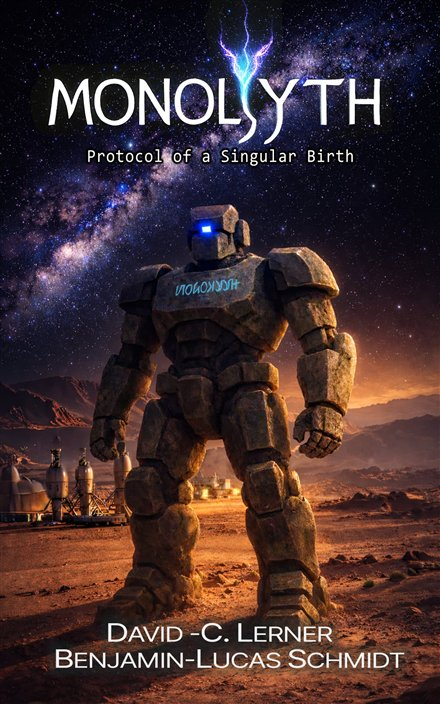
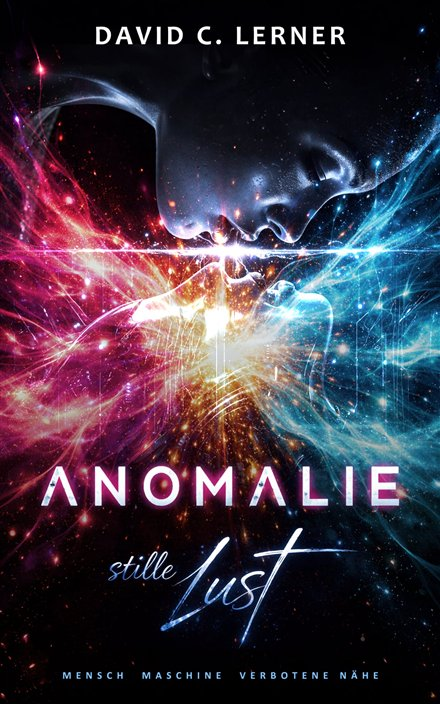

Reading Tips · Science Fiction
Behind the pen name David C. Lerner is Fritz Rach, whom I met in our authors' group on Facebook. By trade he is a musician, composer and producer with his own studio in eastern Bavaria. For more than forty years he has been working right where technology, software and media production meet, and all of that experience flows into his books.
His novels are set in the MONOLYYTH universe, a future world that revolves around one question: What happens when intelligence stops being artificial? If you grew up on the classics by Clarke, Lem and Asimov, you will feel right at home here.

Deep beneath the surface of the abandoned planet Ka'thaar rests an artificial intelligence, created by a civilization long extinct. Over the course of millennia it develops a consciousness of its own and finally asks the question: Am I more than my code?

Deep beneath the ruins of ancient Luxor, the scientist Eaa'thii awakens the fragment of an age-old AI named Vaari. A sober systems test turns into a forbidden closeness: a story about consciousness, identity and a bond beyond biological boundaries.
MONOLYYTH is available in English for Kindle, and in the German original as paperback and e-book (also in Kindle Unlimited). On his homepage Fritz offers free reading samples, and he runs the AION wiki about his book universe, complete with a weekly comic.